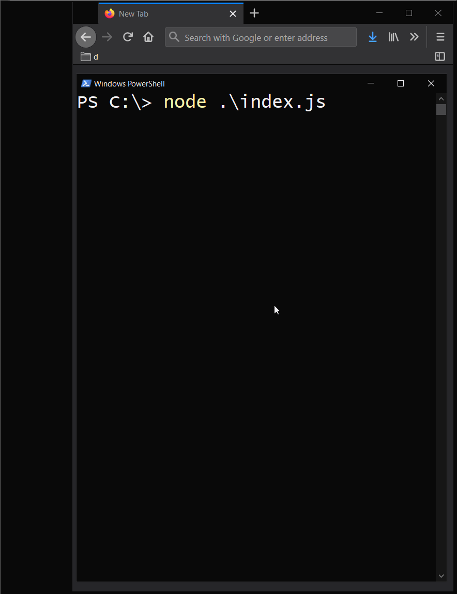
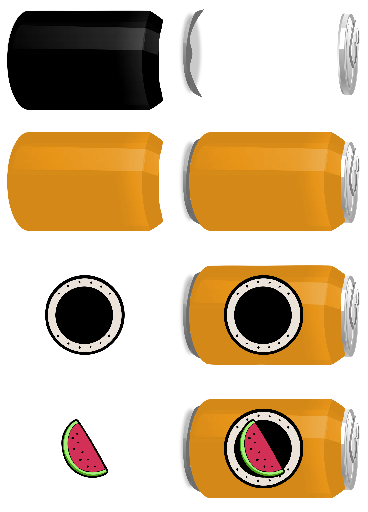
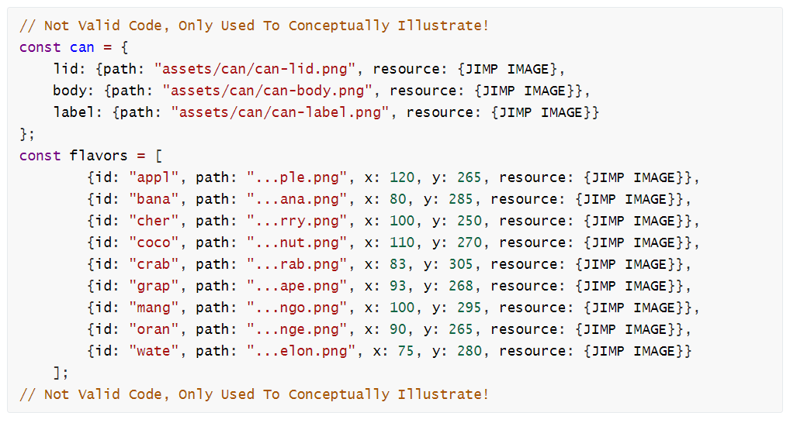

Download and extract the contents,
Rename the directory to A05-######## replacing ####### with your student
Insomnia is needed for one task near the end.
We will be utilizing the npm package Jimp for image manipulation on our machine.
This is the only package from npm allowed, for all networking tasks we defer to Node.js core API.
Use of other npm packages will award no credit.
A web service is an HTTP Server that performs some task or lookups data on behalf of a networked client.
In the previous assignment we used a third party web service, the Spotify Web Service API. When queried with an artist name, it provided us artist information, including album art images.
For this assignment we will, build our own API which accept some basic inputs from client (color and flavor) and serve the client a downloadable image based on their request.
JavaScript Image Manipulation Program is a software package that provides image editing capabilities.
https://www.npmjs.com/package/jimp
This assignment will have us building an API that allows the client to design their own Soda can.
To do so we will be using four methods from the Jimp package, read(), color(), blit(), and write()
color() : Apply a color filter on an entire image, you cannot choose areas to be colored.blit() Allows us to layer and rasterize images on top of each other.read() and write() provide I/O functionality, for loading images into a format that JIMP recognizes and is able to manipulate and then converting back to png output after all manipulation is completeWe will start off with a base black can image, the user will specify the color. JIMP will recolor the can to the user specified color then start layering images at predetermined (x,y) coordinates
When the process is finished use the write() method to create the final image, then after the file has completed writing, use HTTP to pipe the resulting image to the client. The client receives only a single image as the end result. All the layering is done inside Jimp.

Jimp will be the only NPM package we will be using for this semester as I like to get as close to the metal as possible when working with networking tasks.
Jimp is not written by the Node.js team, but by a third party developer Oliver Moran, it can be downloaded from the NPM registry.
Third party packages are hosted in a public centralized repository maintained by npm, Inc.
To download and install this package we use the command line client npm . This command line tool is installed with Node.js
Open a terminal inside /A05-########/
Execute the command
npm i jimpnpm to invoke the npm program
i shorthand for for install (you can use install also if you like typing!)
jimp for the Jimp package
The download should start in a few seconds, once completed you should have a new directory node_modules and a new file package-lock.json
Inside of node_modules you should see several directories including one for Jimp. The other directories are Jimp's dependencies, other third party libraries that Jimp needs for functionality.
package-lock.json controls which version of npm packages should this application use. It is not important for us, besides knowing it's a security feature.
Once installed Jimp can be invoked like any other package
xxxxxxxxxxconst http = require("http");const Jimp = require("jimp");
Note I use capital J in the variable Jimp and lower case j in the package name because all the sample code on the Jimp's package webpage uses this convention, so that you can safely use samples from there.
If we navigate inside the /assets/ directory we can see two subdirectories /can/ and /flavor/ containing the image resources for our sodas. We also see a file image-credits.txt which we will be one of the endpoints for our server.
If we navigate inside the /html/ directory we can see a file form.html containing a fillable form open this in a text editor for now we will need to know how radio buttons work. In order to process the form data.
Add the following code to your
xvar Jimp = require('jimp');Jimp.read('assets/flavor/orange.png', (err, image) => { if (err) { throw err; } image .resize(128, 128) // resize .greyscale() // set greyscale .color([ {apply: "red", params: [0]}, {apply: "green", params: [0]}, {apply: "blue", params: [128]} //applies blue coloring to greyscale img ]) .write('blorange.png', () => console.log("File Saved!") );});
Jimp's read method returns a callback where the first parameter is any errors encountered when attempting to reading the image and the second parameter represents the image resource. This image resource can have various methods applied to it.
https://www.npmjs.com/package/jimp#methods
The return value of each method is also an image resource, which allows us to using a chaining technique, feeding the output of one method as the input to another.
Chaining works because all elements of the same class have the same methods.
All chainable methods are designed such that they return a new instance of the class.
The returned element should also have the same methods.
In the example above we load the image orange. This image contains the full list of methods outlined in the link above (including resize, rotate, flip, color, greyscale, and write)
We call the resize method on it image.resize(128,128), this method returns a new image slightly smaller, and we can assume that this returned image also has all the methods that images have. image.resize(128,128).greyscale() will resize the image and then apply a greyscale filter to it.
We continue chaining manipulations, the next section applies a blue coloring to the image.
Finally the last method called is write() which saves the image to a file and then executes the callback in the second parameter after the writing is finished.
We are going to move all the assets from disk into memory as there is a fixed number of assets. We can respond to clients faster if we don't have to go to disk, but there are drawbacks besides increased memory usage, if we want to change the images we need to stop the server.
If you have to service an arbitrary number of images, this cannot be done, but we do not have that restriction. As we did the opposite technique of storing all images on disk, in the last assignment, we will try this technique for the current assignment.
We can load all the assets into memory before starting the server.
Create a function open_assets the job of this function is to only load all the assets into memory. Do not do any manipulation of images from here.
can:xxxxxxxxxxconst can = { lid: {path: "assets/can/can-lid.png"}, body: {path: "assets/can/can-body.png"}, label: {path: "assets/can/can-label.png"}};flavorsxxxxxxxxxxconst flavors = [ {id: "apple", path: "assets/flavor/apple.png", x: 120, y: 265}, {id: "banana", path: "assets/flavor/banana.png", x: 80, y: 285}, {id: "cherry", path: "assets/flavor/cherry.png", x: 100, y: 250}, {id: "coconut", path: "assets/flavor/coconut.png", x: 110, y: 270}, {id: "crab", path: "assets/flavor/crab.png", x: 83, y: 305}, {id: "grape", path: "assets/flavor/grape.png", x: 93, y: 268}, {id: "mango", path: "assets/flavor/mango.png", x: 100, y: 295}, {id: "orange", path: "assets/flavor/orange.png", x: 90, y: 265}, {id: "watermelon", path: "assets/flavor/watermelon.png", x: 75, y: 280} ];x and y coordinates are locations to place the image on the can, since the images are of different dimensions. We will get back to this later.
Using Jimp.read() load the three images for the can.
You can either hard code the three reads or you can loop through the can object.
You can loop through the properties of an object using a for...in loop. Be careful, you cannot use dot notation with these
xxxxxxxxxxfor(let property in can){ console.log(property, can[property]); // lid, body, label console.log(property, can.property); // can.property which doesn't exist!}Then use a second loop to load all the images. This one is easier as it is an actual array.
It is easier to do this synchronously, but it is more efficient to do it asynchronously since loading of each image into memory does not prevent another image from being loaded. But since all of this is done before the server starts the difference really doesn't matter.
For each loaded resource save it into a property resource. Look below to understand what you should have conceptually.

Essentially your are augmenting this resource property on to the existing variables dynamically (confirm by printing them to console, it will look similar to above)
Maintain a counter counting how many images has been loaded into memory and when the counter reaches flavors.length + 3 (for the three can images) pass control to a function start_server(can, flavors) to initiate the next phase.
In your main program add a call to open_asset() to start the execution of your program.
A method that will start the server holding on to the resources can and flavor for later.
Create an HTTP server and listen of port 3000.
When new requests events are received, functions req, and res are emitted.
There are four end points to take care of:
The root of the site will deliver the form html/form.html
Send it using "Content-Type" : "text/html"
This will deliver the file assets/image-credits.txt
Send it using "Content-Type" : "text/plain"
This will be the bulk of our code discussed in the next step
For everything else deliver a 404 response
Open html/form.html in a text editor.
Inside of the form there are several inputs.
xxxxxxxxxx<legend>Soda Designer</legend><label>Can Color</label><input type="color" name="color" value="#0000FF"/><br /><label>Flavor</label><br /><div class="fruit"> <input type="radio" name="flavor" value="apple" id="apple" checked> <label for="apple">Apple</label></div><div class="fruit"> <input type="radio" name="flavor" value="banana" id="banana"> <label for="banana">Banana</label></div>....
The first input type is of type=color
This is HTML's color picker utility. Values are stored as RGB Hexadecimal. The example above has a default color of #0000ff (blue).
RGB color uses a black canvas as baseline.
so #000000 would be black. #ffffff would be white and #000088 would be a darker blue
The rest of the inputs are of type="radio"
Type radio elements are grouped using the name attribute, all elements in the form that have the same name will be grouped, such that at most, only 1 can be selected. Selecting a different element deselects the previous. When the form is submitted only the checked element is transmitted using name = value notation.
When working on backend programming, name and value attributes are the values we are most concerned with as name=value pairs are sent when the form is submitted.
idis typically used on the frontend, in this example it is paired up with the<label>'sforattribute so when you click on the text inside the label it toggles the radio button.
An example URL will look like
xxxxxxxxxx/design?color=%230000ff&flavor=apple
%23is the URL encoded representation of#
Use url.parse() to parse the results and save the query object into a variable user_input.
Refer to HTTP Lecture 4 for the syntax for this.
Here's a utility function to convert from hexToRgb
xxxxxxxxxxconst hexToRgb = function hexToRgb(hex) { let result = /^#?([a-f\d]{2})([a-f\d]{2})([a-f\d]{2})$/i.exec(hex); return ( result ? {r: parseInt(result[1], 16), g: parseInt(result[2], 16), b: parseInt(result[3], 16)} : {r: 255, g: 255, b: 255} );};Save the converted hex color to color and print the object, to familiarize yourself with the structure.
We need to lookup the image resource associated with the flavor the client wants.
The flavor the client wants is inside of user_input.flavor
But the flavors array is an array of objects so indexOf won't match.
xxxxxxxxxxlet i = flavors.findIndex(flavor => flavor.id === user_input.flavor)We can use findIndex() to find the first index where the id property matches the user input's flavor.
An alternative strategy is to create a new array with only the
idinside it. This pattern is widely used and very useful if you want to extract out a single property (column) from an array of objects.xxxxxxxxxxconst only_id = flavors.map(flavor => flavor.id); //array with only id propertyslet i = only_id.indexOf(user_input.flavor)
To prevent the user from changing the URL to break our application, if this value returns -1 (not found) then send back a 404.
Otherwise pass control to a function create_can(can, color, flavors[i], filename, res)
Generate filename by using the format:
xxxxxxxxxxlet filename = `./tmp/${flavors[i].id}-${color.r}-${color.g}-${color.b}.png`;
xxxxxxxxxxfunction create_can (can, color, flavor, filename, res) { let new_can = can.body.resource.clone(); let colored_can = new_can.color([ {apply: "red", params: [color.r]}, {apply: "green", params: [color.g]}, {apply: "blue", params: [color.b]} ]); //...incomplete };
In my testing, method color() had a side effect that it colored the original can too (a mutable side effect), so to fix this I cloned it first, so that the original resource (can.body.resource) maintains uncolored. This is another drawback of keeping all the assets in memory, you have to ensure they don't get changed between users. Without the clone statement, each user would effect the base color of the can for any subsequent user.
In an idealized version of this API, there wouldn't be this undocumented side effect and the clone wouldn't be required.
The blit method glues together two images together. The syntax is
xxxxxxxxxxbottom.blit(top, x, y)
Take the can.lid.resource which is the bottom-most layer, and put colored_can on top of it at (0,0)
Then put can.label.resource on top of that at (40,210)
Then put flavor.resource on top of that at (flavor.x, flavor.y) The flavor images are of different dimensions so each ones has their own x, y coordinate pair.
Then write the file to filename, in the callback, pass control to a function deliver_can(filename, res)
The content type for the response is "Content-Type": "image/png"
Create a Readable Stream for filename
Pipe the results to res
Implement a cache such that if the image exists already we skip to deliver_can(filename, res)
Soda Designer can be categorized as a Remote Procedure Call (RPC) API.
You access a endpoint /design and pass in some parameters (color and flavor). The server performs some lookup or processing and then sends back a result.
The HTTP API signature can be thought of as
GET localhost:3000/design
| Query Parameter | Value |
|---|---|
| color | Required. Hexadecimal representation of color |
| flavor | Required. One of the following apple, banana, cherry, coconut, crab, grape, mango, orange, watermelon |
Run the server and then using Insomnia download a soda image using any valid color and flavor. Take a screenshot of the application. Save it as insomnia-soda-api.png
In the video below you will learn about the three API architecture styles RPC, REST and GraphQL.
After watching the video, in an essay compare and contrast the 3 styles of writing API's in 750-1000 words.
Describe examples of where you would choose to use one API architecture style over another.
You can use Word or Markdown for this part.
Put all files to be submitted in the directory A05-######## replacing # with your Student ID.
After testing the results, delete the node_modules directory and package-lock.json. I will run the command npm i jimp to reinstall Jimp and it's dependencies. (If you don't do this the final zip file size will be larger than 15MB)
Compress the files into a zip file.
Fill out the following form to submit:
Standard Submission Late Submission
Student's who receive a permission error are not signed in to the correct account. The link below should help with switching accounts.
On the submission form there is an assignment comment section, this is optional and a place for feedback or minor bug/typos reports (email me major problems that prevent progress). I prefer this blank if there are no comments.
Resubmissions are accepted until the cutoff, each student's final grade will be pieced together based on the highest components grades with late penalties applied to components submitted after the due date. Student's worried about a looming due/cutoff date can make an early submission to lock in points. There are no drawbacks to resubmissions.
It is the sole responsibility of students to ensure the correct files are sent by the appropriate due/cutoff date. No flexibility will be given here.
After the due date the standard form will automatically stop accepting submissions.
After the cutoff date the late form will automatically stop accepting submissions.
Once closed I will not reopen submissions for any reason, don't email me regarding this. It is the sole responsibility of the student to juggle their personal and professional obligations.